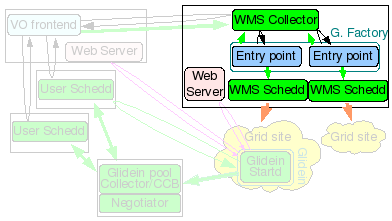

WMS Factory
WMS Collector and Factory Installation
1. Description
 The glidein Factory node will be the Condor Central Manager for the WMS, i.e. it will run the Condor Collector and Negotiator daemons, but it will also act as a Condor Submit node for the glidein factory, running Condor schedds used for Grid submission.
On top of that, this node also hosts the glidein factory daemons. The glidein Factory is also responsible for the base configuration of the glideins (although part of the configuration comes from the Glidein frontend).
Note: The WMS collector and factory must be installed on the same node.
2. Hardware requirements
| Installation Size | CPUs | Memory | Disk |
| Small | 1 | 1GB | ~10GB |
| Large | 4 - 8 | 2GB - 4GB | 100+GB |
 A major installation, serving tens of sites and several thousand glideins will require
several CPUs (recommended 4-8: 1 for the Condor damons, 1-2 for the glidein
factory daemons and 2 or more for Condor-G schedds) and a reasonable amount of
memory (at least 2GB, 4GB for a large installation to provide some
disk caching).
A major installation, serving tens of sites and several thousand glideins will require
several CPUs (recommended 4-8: 1 for the Condor damons, 1-2 for the glidein
factory daemons and 2 or more for Condor-G schedds) and a reasonable amount of
memory (at least 2GB, 4GB for a large installation to provide some
disk caching).
The disk needed is for binaries, config files, log files and Web monitoring data (For just a few sites, 10GB could be enough, larger installations will need 100+GB to maintain a reasonable history). Monitoring can be pretty I/O intensive when serving many sites, so get the fastest disk you can afford. An SSD disk with sufficient space is recommended for good performance of a large production factory. A good estimate is that about 100GB will be needed for a factory with multiple frontends. If an SSD is not possible, a RAMDISK could possibly be used, but this can cause difficulties and hassle in configuration and synchronization.
It must must be on the public internet, with at least one port open to the world; all worker nodes will load data from this node trough HTTP. Note that worker nodes will also need outbound access in order to access this HTTP port.
3. Needed software
3.1 Software List
| Software | Notes | Install Before glideinWMS |
| Linux OS | A reasonably recent Condor-supported OS Linux OS (RH/SL4 and RH/SL5 tested at press time). | X |
| Python interpreter | v2.3.4 or above | X |
| The perl-Time-HiRes rpm. | This rpm may already be included in perl, depending on the perl version | X |
| The OSG client software. | This can be installed prior to glideinWMS, but the installer can install it inline with the glideinWMS install | |
| A HTTP server, like Apache or TUX. | This should be installed prior to glideinWMS (see below). This port will need open access to the internet, so worker nodes can download data from this service. | X |
| The Condor distribution as a tarball. | The installer will use the tarball to install and configure Condor inline | |
| The RRDTool package | v1.2.18 or later (see below) | X |
| The M2Crypto python library | v0.17 or later (see below) | X |
| The javascriptRRD package | v0.6.3 or later with flot (see below) | X |
| The glideinWMS software. |
NOTE:
- Condor version v7.3.1 has a known issue with incorrect return/exit codes of condor_status and condor_q
-
If you are using Condor version v7.3.2 disable VOMS checking in condor_config file used by Condor daemons other
than that used by user schedd. VOMS checking adds unrequired overhead. To do so, set
USE_VOMS_ATTRIBUTES = False
or for individual condor daemons like collector
COLLECTOR.USE_VOMS_ATTRIBUTES = False
3.2 HTTP Server
The glidein Factory needs a HTTP server, like Apache or TUX. The server should be installed on the same node, but a different node can be used as long as the web area is writable from this one. Servers often come pre-installed with HTTP server software, so if you have one running, just reuse it. Otherwise, the installer can help you install one (as root). This will need to be installed on a port with access to the internet, so worker nodes can download data from this service. (See GlideinWMS Component Install)
3.3 RRDTool
You will also need the python module for RRDTool (v1.2.18 or later). Many systems come with packages for it; if possible use that. Otherwise see additional install notes for alternative installs.
3.4 M2Crypto
You will need the M2Crypto python library. A few systems include it in the software distribution; if possible install the system one. Otherwise see additional install notes for alternative installs.
3.5 javascriptRRD
You will need the javascriptRRD package. It contains the javascript libraries needed by the monitoring. Just download the tarball (with flot), and untar it. You will need to point the installer to this directory.
4. Before you begin...
4.1 Required Users
The installer will ask you for several non-privileged users during the install process. These should be created prior to running the glideinWMS installer.
| User | Notes |
| WMS Collector - Condor User | If privilege separation is not used, then install as the same user as the Factory |
| Factory | The Factory will always be installed as a non-prvileged user, whether or not privilege separation is being used. |
| One user per VO Fontent (See notes) | If you are using privilege separation, you will need a user for each VO frontend that will be communicating with the Factory. Otherwise, no new users need to be created for the frontends. |
4.2 Required Certificates/Proxies
Each service in the GlideinWMS will use a x509 certificate in order to identify itself using GSI authentication (see the Quick Reference Guide" for an overview. The installer will ask for several DNs for GSI authentication. You have the option of using a service certificate or a proxy. These should be created and put in place before running the installer. The following is a list of DNs the installer will ask for:
- WMS Collector cert/proxy DN
- Glidein Frontend proxy DN (cannot use a cert here)
Note 2: The installer will ask if these are trusted Condor Daemons. Answer 'y'.
4.3 Required Directories
When installing the Factory you will be presented with a question asking for the directory location for various items. The example below puts many of them in /var. All the directories in /var have to be created as root. Therefore, if you intend on using /var, you will have to create the directories ahead of time.
Due to new restrictions on the directory permissions, it is no longer recommended that you install glideinWMS into the /home directory of the user.
Note: The web data must be stored in a directory served by the HTTP Server.
Example:
Where will you host your config files?: [/var/gfactory/glideinsubmit] /home/gfactory/glideinsubmit Where will you host your log files?: [/var/gfactory/glideinlogs] /var/gfactory/glideinlogs Where will you host the client log files?: [/var/gfactory/clientlogs] /var/gfactory/clientlogs Where will you host the client proxies files?: [/var/gfactory/clientproxies]/var/gfactory/clientproxies Where will the web data be hosted?: [/var/www/html/glidefactory] /var/www/html/glidefactory
4.4 Miscellaneous Notes
At some point the installer will prompt you for the OSG VDT Client location or if you want to install it. The installer will install the client for you. (See GlideinWMS Component Install)
When asked if you want OSG_VDT_BASE defined globally? Answer 'y' unless you want to force your users to find and hard code the location.
By default, match authentication will be used. If you have a reason not to use it, be sure to set to False the USE_MATCH_AUTH attribute in both in both the Factory and Frontend configuration files.
5. glideinWMS Collector installation guide
If you are installing privilage separation, you need to install glideinWMS Schedds and Collector as root. Otherwise, they can be installed as a non-privileged user. If installing as a non-priveleged user, it is recommended that both the WMS Collector and the Factory share the same credentials. In either case, the Collector needs access to GSI credentials.
Move into
glideinWMS/install
and execute
./glideinWMS_install
You will be presented with the service selection screen. Choose the glideinWMSSchedds and Collector and follow the instructions. Additional information as well as a sample install walk-through is below.
| Field | Installation Text | Description |
| User | Which user should Condor run under? | If not using privilege separation, this user should be the same user as the factory (see Required Users). Otherwise, the collector should be run as root. |
| Condor tarball | Where do you have the Condor tarball? | As part of the required software, you will need to download the condor distribution. |
| WMS Collector location | Where do you want to install it?: [/opt/glidecondor] | This is the directory where the installer will put the Condor Collector (And Schedd)
used to submit glideins to the grid gatekeepers. It will create a condor.sh (or .csh) in this
directory that will set environment variables. It is important to always source the correct
condor.sh before starting/stopping/querying condor. There are two different condor pools
in a glideinWMS installation, so it is very important to make sure your shell environment has
the correct variables and paths before issuing condor commands. It is recommended to avoid putting this in a user home directory, as permission requirements (especially with privilege separation) can cause problems. |
| Privilege separation | Privilege separation is needed to securely support multiple frontends.
Do you want to install it?: (y/n) [y] What is the factory username: List the usernames the factroy will use to separate frontends from one another. |
The glideinWMS currently only supports the factory and the glideinWMS collector installed on the same machine. You must specify the user for the factory here to be a valid caller uid. You must specify each username needed for VO frontends to be a valid target uid. This will also populate the /etc/condor/privsep_config file for Condor privilege separation with the following values:
|
| Factory locations | Where will the factory store its config files? Where will the factory store its log files? Where will the factory store the client log files? Where will the factory store the client proxies? |
The factory directories will be where you install the factory (in the next step). The client log and proxy locations will be authorized by the PrivSep to be written to by condor daemons. If using privilege separations, they need to be owned by root.
As these directories need to be world-readable, and the client log and proxy location have permission requirements if using privilege separation, these should generally not be located in a user home directory. |
| GSI Security | Where can I find the directory with the trusted CAs? ... Please insert all such DNs, together with a user nickname. |
GSI security is based on x509 certificates.
First, you will need a list of trusted certificates. VDT comes with a list of certificates, so, if you install that now (or have installed it previously), you can install that now. Note that you may have to update your certificates if you have an old VDT installation. You will next need a certificate or proxy for the WMS collector. See the previous section for more information on required certificates and proxies. If you are using privilege separation, then, on the WMS Collector, the nickname for each Glidein Frontend must be the username that you created for the frontend. The installer will then configure the condor_mapfile (located in the certs directory for each condor. install). See the Quick reference for more information. |
| Collector Configuration | What name would you like to use for this pool? What port should the collector be running? How many secondary schedds do you want? |
Here is where you give an identifier and port for the collector process. The collector typically runs on port 9618. Schedd and other daemons do not have a set port and just use ports in a range determined by the collector. You can also choose how many schedd daemons the master process will start by default. The proper value of this value depends on many factors, including the memory and CPU of the server running it as well as the number of jobs submitted and the number of entry points. This should be increased enough so that each schedd will not have to handle multiple glidein requests to different entry points from factories simultaneously. The default install of 10 schedds should be enough to handle a site with around 10000 jobs. If you are only running hundreds of jobs, you may want to tune this down. Conversely, with higher amounts of jobs, this may need to be increased. This value depends on your installation and can later be tuned based on load and average number of jobs. |
Here a possible set of answers is presented; your setup will probably be slightly different:
Welcome to the glideinWMS Installation Helper
What do you want to install?
(May select several options at one, using a , separated list)
[1] glideinWMS Schedds and Collector
[2] Glidein Factory
[3] GCB
[4] User Pool Collector
[5] User Schedd
[6] Condor for Glidein Frontend
[7] Glidein Frontend
[8] Components
Please select: 1
The following profiles will be installed:
[1] glideinWMS Schedds and Collector
Installing WMS Schedds and Collector
Installing condor
Which user should Condor run under?: [condor] gfactory
You will now need the Condor tarball
You can find it on http://www.cs.wisc.edu/condor/
Versions v7.2.2 and 7.3.1 have been tested, but you
should always use the latest one
Where do you have the Condor tarball? /home/gfactory/downloads/condor-7.4.2-linux-x86_64-rhel5-dynamic.tar.gz
Checking...
Seems condor version 7.4.2
Where do you want to install it?: [/opt/glidecondor] /home/gfactory/glidecondor
Directory '/home/gfactory/glidecondor' does not exist, should I create it?: (y/n) y
Installing condor in '/home/gfactory/glidecondor'
If something goes wrong with Condor, who should get email about it?: admin@my.org
Extracting from tarball
Running condor_configure
Installing Condor from /home/gfactory/glidecondor/tar/condor-7.4.2 to /home/gfactory/glidecondor
Condor has been installed into:
/home/gfactory/glidecondor
Configured condor using these configuration files:
global: /home/gfactory/glidecondor/etc/condor_config
local: /home/gfactory/glidecondor/condor_local/condor_config.local
You should look inside the installation log for some details about how
Condor was installed.
Created scripts which can be sourced by users to setup their
Condor environment variables. These are:
sh: /home/gfactory/glidecondor/condor.sh
csh: /home/gfactory/glidecondor/condor.csh
Do you want to split the config files between condor_config and condor_config.local?: (y/n) [y] y
Condor installed
Privilege separation is needed to securely support multiple frontends.
Do you want to install it?: (y/n) [y]y
A privsep config (/etc/condor/privsep_config) is already in place. Do you want to recreate it?: (y/n) y
What is the factory username: gfactory
List the usernames the factroy will use
to separate frontends from one another.
An empty username entry means you are done.
Username: frontenduser1
Username: frontenduser2
Username:
Directories needed by the factory will be given special
treatment to ease administration.
Where will the factory store its config files?[/var/gfactory/glideinsubmit] /home/gfactory/glideinsubmit
Directory '/home/gfactory/glideinsubmit' does not exist, should I create it?: (y/n) y
Where will the factory store its log files?[/var/gfactory/glideinlogs] /var/gfactory/glideinlogs
Where will the factory store the client log files?[/var/gfactory/clientlogs] /var/gfactory/clientlogs
Directory '/var/gfactory/clientlogs' does not exist, should I create it?: (y/n) y
Where will the factory store the client proxies?[/var/gfactory/clientproxies] /var/gfactory/clientproxies
Directory '/var/gfactory/clientproxies' does not exist, should I create it?: (y/n) y
Privilege separation setup completed
Configuring GSI security
GSI security relies on a list of trusted CAs
Where can I find the directory with the trusted CAs?
Do you want to get it from VDT?: (y/n) y
Do you have already a VDT installation?: (y/n) y
Where is the VDT installed?: /home/gfactory/vdt
Using VDT installation in /home/gfactory/vdt
To use the GSI security for WMS Collector, you either need
a valid GSI proxy or a valid x509 certificate and relative key.
Its subject (i.e. DN) will be added as the trusted daemon
in the condor configuration.
Will you be using a proxy or a cert? (proxy/cert) proxy
Where is your proxy located?: /home/condor/security/grid_proxy.wmspool
My DN = '/DC=org/DC=doegrids/OU=Service/CN=gfactory/gfactory1.my.org'
You will most probably need other DNs in the condor grid mapfile.
The Glidein Frontend(s) will be contacting the WMS Collector
and will interact as daemons. Their subjects (i.e. DNs)
will most likely be needed.
Please insert all such DNs, together with a user nickname.
An empty DN entry means you are done.
DN: /DC=org/DC=doegrids/OU=Services/CN=frontend1.my.org
nickname: [condor001] vofrontend1
Is this a trusted Condor daemon?: (y/n) y
DN: /DC=org/DC=doegrids/OU=Services/CN=frontend2.my.org
nickname: [condor002] vofrontend2
Is this a trusted Condor daemon?: (y/n) y
DN:
What name would you like to use for this pool?: [My glideinWMS pool] GlideinWMSPool
What port should the collector be running?: [9618] 9618
How many secondary schedds do you want?: [9] 9
[...]
The installer will also start the Condor daemons. To stop the Condor daemons, issue
killall condor_master
To start them again:
cd <install dir>; ./start_condor.sh
6. Glidein Factory installation guide
The glidein Factory needs a x509 proxy to communicate with the rest of the world. You have the option of giving the Factory its own proxy,
or having the Glidein Frontend serve up the proxy. Standard configuration has the Glidein Frontend serving the proxy. If the Factory will have its
own proxy, you need to create such proxy before instantiating a glidein Factory and then keep it valid for the life of the factory. If used
for job submission, this proxy must at any point in time have a validity of at least the longest expected job being run by the glideinWMS
(and not less than 12 hours).
How you keep this proxy valid (via MyProxy, kx509, voms-proxy-init from a local certificate, scp from other nodes, or other methods),
is beyond the scope of this document.
Note that the OSG client is may be installed on this node. Be careful to have not source the VDT setup script prior to the installation. This can causel problems with conflicting python versions. VDT sometimes installs its own version of python which will not have rrdtool or M2Crypto available. You can determine if this will be a problem by sourcing the VDT setup script and then doing a 'type python' or 'which python' to see which python is being used.
The glidein factory itself should be installed as a non privileged user. The provided installer can be used to create the configuration file, although some manual tunning will probably be needed.
Move into
glideinWMS/install
and execute
./glideinWMS_install
You will be presented with the service selection screen. Follow the instructions and install all the software components. Additional information about the options is below:
| Field | Installation Text | Description |
| JavascriptRRD | Where is javascriptRRD installed? | As part of the required software, you will need to javascriptRRD.. |
| GSI Proxy | Do you want to use such a proxy? | The Glidein Factory can be configured to use a default GSI proxy for submission. However, this operation mode is not recommended. |
| Factory Locations | Where will you host your config files? Where will you host your log files? Where will you host the client log files? Where will you host the client proxies? Where will the web data be hosted? What Web URL will you use? |
These directories will match the configuration specified in the previous WMS collector install.
For privilege separation, these will be need to be world-readable. In addition, the client log
directory and proxy directories will need to be owned by root,
or Condor will report a security error. Web data will be where the glidein Factory reports usage statistics. This should be a directory served by the web server and owned by the factory user. You will also be prompted for a Web http URL to access these pages. If the web server is not running on the default port (80), please specify the port as well. Due to the permission requirements, it is not recommended that these be stored in a user home directory. |
| Condor Configuration | What is the Condor base directory? |
This will be the directory that you installed the WMS collector in the previous step.
Do not use the user pool collector! This step will detect the Schedd that were created in the previous step. Typically, all the schedd daemons can be used to submit glideins to. However, you can specify a subset to submit to if desired. |
| CCB | Do you want to use CCB (requires Condor 7.3.0 or better)? |
You should use CCB unless you: a) Have an old version of Condor that does not support it. b) Do not have an out-bound network connection (one-directional connectivity) See the Condor manual for more information. |
| glExec | Do you want to use gLExec? | This question generally depends on the policy of the sites that you will be submitting glideins to. The glideins will be submitted to the site, then will verify the environment, start Condor, and then run the user job. glExec provides the ability to segregate these responsibilities to different users (much like a sudo command would). It provides additional accounting mechanisms and better priority management. Use glExec if you desire these features, the sites you are submitting to require it, or if you do not trust user jobs. |
| a) ReSS | Which RESS server should I use? Select Condor RESS constraint: [] Define a python filter: |
There are three ways to retrieve entry points that glideins can submit to.
The first, RESS, is an information gathering service that provides a GLUE-based
information about sites. In order to use RESS, you will need to have the address
of a RESS server. You will also have to provide a condor rule to distinguish
which sites to submit to. This will be a condor constraint that will query a classad
about the GLUE schema. For example, StringlistMember("VO:MyVO",GlueCEAccessControlBaseRule) will return all results that support that VO. After these results are returned, a python expression will be evaluated that will take these parameters and can perform calculations to determine if the site is sufficient. Refer to the Condor manual for condor constraint syntax, and to GLUE schema pages for more information about valid parameters that can be used. Note that you may need to verify entry points after automatically adding from ReSS or BDII, as many OSG sites will crash if you try to run using the default work_dir="OSG" and require "condor". |
| b) BDII | Do you want to fetch entries from BDII? |
There are three ways to retrieve entry points that glideins can submit to. The second, BDII, is an information gathering service that provides site information. Note: If you use BOTH ReSS and BDII for entry points, you will probably get duplicates that will need to be cleaned up manually |
| c) Manual entry | Please list all additional glidein entry points, Entry name (leave empty when finished): Gatekeeper for 'XXXX': RSL for 'XXXX': ((queue=default)(jobtype=single)) Work dir for 'XXXX': [.] Site name for 'XXXX': |
There are three ways to retrieve entry points that glideins can submit to.
The third, manual entry, is a more tedious way of specifying entry points,
but may be necessary if the RESS or BDII services do not contain the entry points
you need. For each entry point, you will need the address of the gatekeeper. You will need an RSL expression that specifies the queue and jobtype. You will also be prompted for a work directory and a name for this site. Contact your site administrator or refer to Globus documentation for more information. |
| Frontend Configuration |
Frontend security name (leave empty when finished): Frontend identity (like vo1@gfactory1.my.org): Frontend proxy security class: [frontend] Username: |
For each frontend you will be supporting, you will need to specify the identity so that
it is authorized by the factory to submit glideins on its bequest.
If this information is not correct, the factory will drop all glidein requests
from the frontend.
For a visual guide to the configuration options that need to match in the frontend and factory, see this color coded chart. |
The part that is not completely automatic is the list of GCBs and the configuration of the GSI security; you will need to provide the DNs of all the submit nodes. It is strongly recommended to use CCB over GCB if possible.
Here a possible install is presented; your setup will probably be slightly different:
Welcome to the glideinWMS Installation Helper
What do you want to install?
(May select several options at one, using a , separated list)
[1] glideinWMS Schedds and Collector
[2] Glidein Factory
[3] GCB
[4] User Pool Collector
[5] User Schedd
[6] Condor for Glidein Frontend
[7] Glidein Frontend
[8] Components
Please select: 2
The following profiles will be installed:
[2] Glidein Factory
Installing Glidein Factory
Do you have already a javascriptRRD installation?: (y/n) y
Where is javascriptRRD installed?: /home/gfactory/javascriptrrd-0.6.3
The Glidein Factory can be configured to use a default GSI proxy for submission.
However, this operation mode is not recommended.
Do you want to use such a proxy?: (y/n) [n] n
As you probably know, privilege separation
is needed to securely support multiple frontends.
If you are using privilege separation, the factory directories
must be world readable (except for the proxies dirs)
Hosting the config and log files in the factory home directory
is thus not recommended anymore.
Where will you host your config files?: [/var/gfactory/glideinsubmit] /home/gfactory/glideinsubmit
Where will you host your log files?: [/var/gfactory/glideinlogs] /var/gfactory/glideinlogs
Where will you host the client log files?: [/var/gfactory/clientlogs] /var/gfactory/clientlogs
Where will you host the client proxies files?: [/var/gfactory/clientproxies]/var/gfactory/clientproxies
Where will the web data be hosted?: [/var/www/html/glidefactory] /var/www/html/glidefactory
Directory '/var/www/html/glidefactory' not empty.
Should I use it anyhow?: (y/n) y
What Web URL will you use?: [http://gfactory1.my.org/glidefactory/] http://gfactory1.my.org/glidefactory
Give a name to this Glidein Factory?: [mySites-gfactory1] GlideinFactory-gfactory1
Give a name to this Glidein instance?: [v1_0] v1_0
What is the Condor base directory?: [/home/gfactory/glidecondor]/home/gfactory/glidecondor
The following glidein schedds have been found:
[1] schedd_glideins1@gfactory1.my.org
[2] schedd_glideins2@gfactory1.my.org
[3] schedd_glideins3@gfactory1.my.org
[4] schedd_glideins4@gfactory1.my.org
[5] schedd_glideins5@gfactory1.my.org
[5] schedd_glideins6@gfactory1.my.org
[5] schedd_glideins7@gfactory1.my.org
[5] schedd_glideins8@gfactory1.my.org
[5] schedd_glideins9@gfactory1.my.org
Do you want to use all of them?: (y/n) y
Using ['schedd_glideins1@gfactory1.my.org', 'schedd_glideins2@gfactory1.my.org', 'schedd_glideins3@gfactory1.my.org',
'schedd_glideins4@gfactory1.my.org', 'schedd_glideins5@gfactory1.my.org', 'schedd_glideins6@gfactory1.my.org',
'schedd_glideins7@gfactory1.my.org', 'schedd_glideins8@gfactory1.my.org', 'schedd_glideins9@gfactory1.my.org']
Do you want to use CCB (requires Condor 7.3.0 or better)?: (y/n) y
Do you want to use gLExec?: (y/n) y
Do you want to fetch entries from RESS?: (y/n) [n] y
Which RESS server should I use?: [osg-ress-1.fnal.gov] osg-ress-1.fnal.gov
Select Condor RESS constraint: [] StringlistMember("VO:MyVO",GlueCEAccessControlBaseRule)
Define a python filter: [(int(GlueCEPolicyMaxCPUTime)==0) or (int(GlueCEPolicyMaxCPUTime)>(72*60))] (int(GlueCEPolicyMaxCPUTime)>(1))
Found 28 additional entries
Do you want to use them all?: (y/n) y
Do you want to fetch entries from BDII?: (y/n) [n]n
Please list all additional glidein entry points,
Entry name (leave empty when finished):
For security reasons, we want to whitelist all the frontends that we will be serving.
Each frontend should be segregated to its own (set of) username(s).
If you do not want privilege separation, you can still just use the factory user.
Please list the frontends you will be serving:
Frontend security name (leave empty when finished): vofrontend1
Frontend identity (like vo1@gfactory1.my.org): frontenduser1@gfactory1.my.org
Frontend proxy security class: [frontend]
Username: frontenduser1
Frontend security name (leave empty when finished): vofrontend2
Frontend identity (like vo1@gfactory1.my.org): frontenduser2@gfactory1.my.org
Frontend proxy security class: [frontend]
Username: frontenduser2
Frontend security name (leave empty when finished):
Do you want to create the glidein (as opposed to just the config file)?: (y/n) [n]n
To create the glidein, you need to run
/home/gfactory/glideinWMS/creation/create_glidein /home/gfactory/glideinsubmit/glidein_v1_0.cfg/glideinWMS.xml
Configuration files are located in /home/gfactory/glideinsubmit/glidein_v1_0.cfg
If you followed the example above, you ended up with a configuration file in /home/gfactory/glideinsubmit/glidein_v1_0.cfg/glideinWMS.xml. Edit this file to suit your needs and than create the factory instance as described in the Manual configuration section below.
At this point, your factory installation is complete and you can start the factory. See the following section for how to do this.
7. Factory Management Commands
The following gives some introduction to managing a factory. For more information, see the Factory Configuration page.
7.1 Starting and Stopping
The glidein factory comes with a init.d style startup script.
Note: you will need to export an X509_CERT_DIR variable pointing to the directory of your installed CA certificates when starting the factory.
Glidein factory starting and stopping is handled by
<export X509_CERT_DIR=[CA_CERTIFICATE_DIRECTORY] <glidein directory>/factory_startup start|stop|restart
You can check that the factory is actually running with
<glidein directory>/factory_startup status
Getting configuration information
To get the list of entries defined in the factory, use
<glidein directory>/factory_startup info -entries -CE
To see which entries are currently active, use
<glidein directory>/factory_startup statusdown entries
PS: Make sure the whole factory is not disabled, by using
<glidein directory>/factory_startup statusdown factory
See the monitoring section on how to check other info.
7.2 Manual configuration
The glidein factory can also be configured manually.
To create an entry point you need:
- the name of the Gatekeeper(s),
- the configuration details of the Grid pool(s),
- the location of the submit point, and
- the loction of the Web server data directory.
- the proper work directory to use (ie. work_dir="OSG" or work_dir="Condor")
cd glideinWMS/creation
./create_glidein <config file>
The startup procedure is the same as described above.
Warning: Never change the files in an entry point by hand after it has been created!.
Use the reconfig tools described below instead.
7.3 Changing the factory configuration
The files in an entry point must never be changed by hand, after the directory structure has been created.
The reason why manual changes are so problematic are two fold:
- The first problem are signatures. Any change requires the change of the signature file, that in turn gets a new signature. Since the signature file signature is one of the parameters of the startup script, all glideins already in the queue will fail.
- The second problem is caching. For performance reasons, most Web caches don't check too often if the original document has been changed; a glidein could thus get an old copy of a file and fail the signature check.
There is only one file that is neither signed nor cached and can be thus modified; the blacklisting file called nodes.blacklist. This one can be used to temporarily blacklist malfunctioning nodes that would pass regular sanity checks (for example: memory corruption or I/O errors), while waiting for the Grid site admin to take action.
The proper procedure to update an entry point is to make a copy of the official configuration file (i.e. glideinWMS.xml) and run
<glidein directory>/factory_startup reconfig config_copy_fname
This will update the directory tree and restart the factory and entry dameons.
Please notice that if you make any errors in the new configuration file, the reconfig script will throw an error and do nothing. So you should never need to worry about corrupting the installation tree using this tool.
NOTE: The reconfig tool does not kill the factory in case of errors. Hence is recommended that you disable any entry points that will not be used.
Once you are done editing the work config file, reconfigure the factory with
<install dir>/factory_startup reconfig <work config>
If the factory was running, the procedure will stop the factory before reconfiguring it, and restart it afterwards.
Starting with v2.5.6, the factory_startup script contains a default location for the factory configuration file which is set to the location used for the initial install. This allows you to not have to specify the config location when doing a reconfig. To change the default location in the file, run the command:
<glidein working directory>/factory_startup reconfig config_copy_fname update_default_cfg
7.4 Downtime handling
Starting with v1_3, the glidein factory supports the dynamic
handling of downtimes.
Downtimes can be handled both at the
factory and at the entry level.
Downtimes are useful when one or more Grid sites are known to have
issues (can be anything from scheduled maintenance to a storage
element corrupting user files).
In this case the factory
administrator can temporarily stop submitting glideins to the
affected sites, without stopping the factory as a whole.
The list of current downtimes are listed in the factory
file in glideinWMS.downtimes
Downtimes are handled with
<glidein directory>/factory_startup up|down -entry 'factory'|<entry name> [-delay <delay>]
Caution: An admin can handle downtimes both at the entry and at
the factory level.
Please be aware that both will be used.
More advanced configuration can be done with the following script:
glideinWMS/factory/manageFactoryDowntimes.py -dir factory_dir -entry ['all'|'factory'|'entries'|entry_name] -cmd [command] [options]You must specify the above options for the factory directory, the entry you wish to disable/enable, and the command to run. The valid commands are:
- add - Add a scheduled downtime period
- down - Put the factory down now(+delay)
- up - Get the factory back up now(+delay)
- check - Report if the factory is in downtime now(+delay)
- vacuum - Remove all expired downtime info
- -start [[[YYYY-]MM-]DD-]HH:MM[:SS] (start time for adding a downtime)
- -end [[[YYYY-]MM-]DD-]HH:MM[:SS] (end time for adding a downtime)
- -delay [HHh][MMm][SS[s]] (delay a downtime for down, up, and check cmds)
- -frontend SECURITY_NAME
(limits a downtime to one frontend)
(If security class is not specified, the downtime is for all users for this frontend.) - -security SECURITY_CLASS
(restricts a downtime to users of that security class)
(If frontend is not specified, the downtime is for all frontends that have this security class.) - -comment "Comment here" (user comment for the downtime. Not used by WMS.)
This script can allow you to have more control over managing downtimes, by allowing you to make downtimes specific to security classes, and adding comments to the downtimes file.
Please note that the date format is currently very specific. You need to specify dates in the format "YYYY-MM-DD-HH:MM:SS", such as "2011-11-28:23:01:00."
7.5 Testing with a local glidein
In case of problems, you may want to test a glidein by hand.
Move to the glidein directory and run
./local_start.sh entry_name fast -- GLIDEIN_Collector yourhost.dot,your.dot,domain
. This will start a glidein on the local machine and pointing to the yourhost.your.domain collector.
Please make sure you have a valid Grid environment set up, including a valid proxy, as the glidein needs it in order to work.
8. Verification
One can save troubleshooting and verification until the installation is complete. At this point, however, you should be able be to query the WMS collector.
Verification of Condor Daemons
Verify processes are running by:
ps -ef | grep condorYou should see several condor_master and condor_procd processes. You should also be able to see one schedd process for each secondary schedd you specified in the install.
You can query the WMS collector by (use .csh if using c shell):
sourceThe condor_q commands query any jobs in the WMS pool (-global is needed to show grid jobs). The condor_status will show all daemons and jobs in the condor pool. Eventually, the factory and VO frontend should show up in a listing like this:/condor.sh
condor_q
condor_q -global
condor_status -any
MyType TargetType Name
glidefactory None FNAL_FERMIGRID_ITB@v1_0@mySite
glidefactoryclient None FNAL_FERMIGRID_ITB@v1_0@mySite
glideclient None FNAL_FERMIGRID_ITB@v1_0@mySite
Scheduler None xxxx.fnal.gov
DaemonMaster None xxxx.fnal.gov
Negotiator None xxxx.fnal.gov
Scheduler None schedd_glideins1@xxxx.fna
DaemonMaster None schedd_glideins1@xxxx.fna
Scheduler None schedd_glideins2@xxxx.fna
DaemonMaster None schedd_glideins2@xxxx.fna